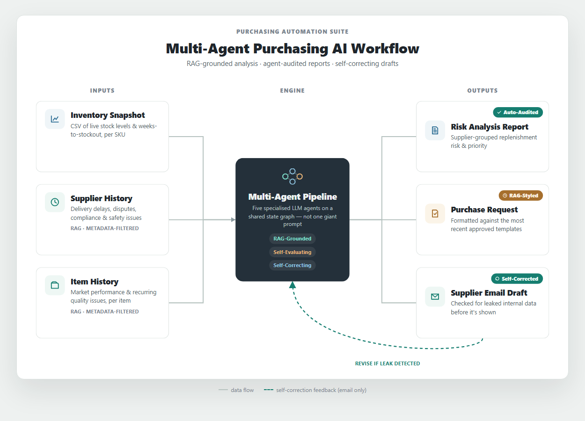

Multi-agent Purchasing AI Suite
A multi-agent LLM pipeline that jointly analyzes an inventory snapshot together with supplier and item history context via RAG, automating the manual work previously handled by purchasing staff — from inventory-risk analysis and replenishment planning to drafting analysis reports, purchase request forms, and supplier emails.
Rather than stopping at a simple stock check, it uses RAG to automatically retrieve and analyze relevant context scattered across many documents, including supplier on-time delivery and shipping-delay history, transaction and negotiation records, customs/regulatory/safety issues, item market performance, and item-specific issue history. Each output is then independently audited by a separate agent for data and logical consistency, producing a quality-evaluation report alongside it. The email draft also goes through a self-correction loop that checks for internal information leakage and rewrites the draft if any risk is found.

Demo: https://soominmyung.com/purchasing-automation
Source: https://github.com/soominmyung/purchasing-automation
At a Glance
| Period |
Oct 2025 – Dec 2025 |
| Role |
Solo project — architecture, development, deployment |
| Domain |
Generative-AI inventory-risk analysis & automated document generation |
| Core stack |
Python, FastAPI, LangGraph, ChromaDB, GPT-4o, Docker, GCP Cloud Run |
| Starting point |
n8n low-code prototype → re-architected as a Python service |
The Problem
Purchasing staff review hundreds of SKU-level inventory records and, on that basis, spend considerable manual effort writing documents such as analysis reports, purchase request forms, and supplier emails.
The challenge is that this process is highly dependent on staff availability and experience. When time pressure or limited familiarity with a supplier or item prevents a full review of evidence scattered across many documents — a supplier's delivery and quality history, past negotiation terms, customs/regulatory/safety issues, and an item's market performance — the result can be inefficient ordering and potential margin loss.
What It Does
Given an inventory snapshot, the system automatically produces four outputs.
- Purchasing analysis report — supplier-grouped inventory-risk assessment and replenishment planning
- Quality-evaluation report — a separate agent audits the analysis for data and logical consistency
- Purchase request form (PR) — formatted per supplier for the approval process
- Supplier email draft — outbound communication for delivery and stock-availability inquiries
The inventory snapshot is provided as a CSV of items flagged for potential shortage, while supplier and item history documents are uploaded, embedded into a vector DB, and then automatically retrieved during the analysis stage.
Architecture
PoC-to-Production — from n8n prototype to production code
I first validated the concept quickly with an n8n low-code workflow. By wiring nodes together, this stage confirmed the feasibility of the “CSV → grouping → LLM analysis → document generation” flow.
Once validated, I re-architected the entire workflow in Python (FastAPI + LangGraph) to implement complex branching logic, state management, and container deployment. In the process I moved the node-based flow onto an async API and a state graph, refined it into a deployable service with API-key authentication and streaming, and set up CI/CD (GitHub Actions → Cloud Run) for the public demo (actual operations run on the company's local server).
Multi-agent pipeline (LangGraph)
Five specialized agents are connected as a LangGraph state graph, and the validator node loops back to an earlier step to rewrite when needed.
INPUTInventory snapshot (CSV) + supplier/item context
01Supplier grouping · priority calculationLead-time-based order date & quantity
Deterministic Python formula, no LLM
02Analysis agentInventory-risk analysis
RAG: supplier/item history lookup
03Evaluation agentAutomated quality audit (logical & data consistency)
Scores accuracy · faithfulness (hallucination) · reasoning · suitability
04PR draft agentPurchase request form draft
RAG: latest N approved templates
05PR document agentFormal purchase request document
RAG: latest N approved templates
06Email agentSupplier email draft
RAG: latest N approved templates
07Validator nodeSensitive-info leak check → auto-rewrite loop
Guardrail, precise rewrite from failure-reason feedback
Why multi-agent Compared to handling everything with a single monolithic prompt, this design offers:
- Modularity — each step can be swapped or improved independently without touching the others; in practice, I isolated just the analysis agent to test replacing GPT-4o with a self-hosted Llama-3-8B model.
- Early error containment — because the evaluation agent independently audits the analysis, a flawed analysis is caught before it propagates into the downstream steps (PR, email).
- Precise self-correction and validation — when the validator node detects a problem, it can pinpoint exactly which step needs a rewrite instead of re-running the entire pipeline from scratch.
Core Components
RAG knowledge base (ChromaDB)
- Pipeline — supplier-record and item-history PDFs (uploaded individually or in bulk as ZIP) are chunked (1,000 chars, 200-char overlap), converted to OpenAI embeddings, and stored in five independent collections split by document type (supplier history, item history, and report/PR/email examples).
- Empirical hyperparameter tuning — deciding the chunk size — reviewing the actual supplier/item history documents, I found they typically run about 1–2 A4 pages, and used that as the basis to benchmark chunk sizes of 500, 1,000, and 1,500 characters for storage/retrieval efficiency. Too small (500) and a single event's narrative (cause → effect) gets cut at a chunk boundary, breaking context; too large (1,500) and several distinct events get mixed into one chunk, blurring the embedding so it can't focus on any one event. I settled on 1,000 characters as the best fit for the document's “per-event” narrative length, and set the overlap to 200 characters (20% of chunk size) so that an event straddling a boundary is still captured in both adjacent chunks.
- Workflow-tailored design — the actual supplier/item history documents followed a convention of stating the supplier name and item code at the top. Recognizing this, I could extract reliable metadata with regex alone, without any complex ontology implementation.
- Metadata tagging — at ingest time, regex extracts the supplier name and item code and attaches them as document metadata. Since every child chunk inherits the parent document's metadata after chunking, the filter always applies correctly even when a given chunk's text doesn't literally contain that name.
- Explicit metadata filtering + similarity search (two-stage retrieval) — when the analysis agent looks up history, it doesn't rely solely on the LLM-generated query text; it also passes the actual supplier name and item code the pipeline already knows as a metadata filter. It first narrows the candidate set to documents satisfying that filter, then ranks by similarity within that set to fetch the top K — so the result is not “semantically similar documents” but precisely “the most semantically relevant among the documents that actually belong to that supplier/item.”
- Strength — pure semantic similarity search risks pulling in similar narratives from other suppliers (e.g. comparable shipping-delay cases), but the metadata filter blocks this cross-contamination at the source — and it does so without any heavy structure like an ontology or knowledge graph, achieved through a single existing document-authoring convention.
- Purpose-differentiated retrieval strategy — supplier/item history is “fact retrieval,” so it uses a metadata filter + similarity ranking, whereas the best-practice templates for analysis reports/PRs/emails are “style retrieval,” which is different in nature. If the company's format changes, an old example may diverge in style from the latest documents, and similarity alone cannot tell them apart. So the example collections record a timestamp at ingest time and, at retrieval time, fetch the top N by most recently uploaded rather than by similarity.
AI quality-evaluation (Evaluator) agent A separate evaluation agent cross-references the analysis agent's output (JSON) against the source supplier/item history it was based on, scoring it out of 10 on four criteria — data accuracy, history faithfulness (hallucination check), logical reasoning, and operational suitability. Because it compares against the exact history retrieved by the analysis agent — passed directly rather than re-fetched — it avoids the failure mode of misjudging a genuinely grounded statement as “unsourced” and wrongly scoring it as a hallucination.
Guardrail — self-correction loop The email output passes through the validator node, which checks for internal information leakage. If a leak is detected, it is not returned as-is; the graph loops back to regenerate the draft.
Real-time streaming (SSE) Instead of a single request-response, the progress of each pipeline stage (CSV parsing → grouping → analysis → document generation) is streamed to the client in real time via Server-Sent Events, showing the current pipeline stage live and surfacing errors immediately when they occur.
Hybrid design — separating deterministic computation from LLM reasoning In the supplier-grouping stage, the recommended order date and quantity are computed with a Python formula based on WksToOOS (weeks to out-of-stock) and CurrentStock. Accuracy-critical values like dates and quantities are handled by deterministic code rather than left to LLM reasoning, eliminating hallucination risk; the LLM then takes that result and focuses solely on risk interpretation and document authoring over the prioritized, structured data.
Security & Observability Security: the public demo has header-based API-key authentication (X-API-Key) and per-IP rate limiting to prevent token abuse by anonymous users. The in-house deployment implements per-user intranet ID/PW login. Observability: LangSmith tracks token usage, latency, and prompt performance for every node, and custom logic outside LangChain is also instrumented with @traceable.
Deployment The public demo runs as a Docker container on GCP Cloud Run (serverless, scale-to-zero) so anyone can access it, with CI/CD via GitHub Actions building and auto-deploying the image on every push to main. For actual in-house operations, the app runs continuously on the same 24/7 local server as SAP ERP, so the team uses it over the intranet — an environment with no cold-start or vector-store volatility issues.
Fine-tuning Study: SFT + DPO on Llama-3-8B
I tested whether the GPT-4o analysis agent could be replaced with a self-hosted model. The goal was to reduce per-call cost and data-privacy exposure, and the approach was to distill GPT-4o's knowledge into Llama-3-8B.
Training data
- Data source — instead of real company data, I used synthetic purchasing scenarios generated by GPT-4o.
- Scenario composition — each consists of inventory rows (item code, item name, supplier, risk grade, current stock, weeks-to-out-of-stock) and supplier/item history (natural language).
- Diversity — a wide variety of history patterns such as shipping delays, price spikes, quality issues, and demand fluctuations.
- Adversarial cases included — I deliberately included cases like data contradictions (high stock yet imminent stockout), conflicting context (a “trusted” label vs. a recent failure), ambiguous history, and missing values, to improve robustness. A model trained on such cases, when faced with similar production cases, responds by explicitly stating contradictions or gaps as such rather than masking them or fabricating information.
- Knowledge distillation — the analysis GPT-4o produced for these scenarios (JSON: analysis report, critical questions, supplementary timeline) was treated as ground truth for Llama to reproduce.
- Fine-tuning scope — limited to the output of the analysis agent being replaced, not the whole pipeline.
Stage 1 — Supervised Fine-Tuning (SFT)
- Llama-3-8B + QLoRA (4-bit, LoRA rank 16 — ~41M trainable params / 8B, 0.51%)
- 30 teacher examples (analysis JSON GPT-4o generated per scenario)
- Training-data shape: JSONL,
{instruction, input: {inventory, supplier_history, item_history}, output: {analysis: {...}}} — only output.analysis (analysis report, critical questions, supplementary timeline) is used as the label
- Vertex AI, 1× Tesla T4, 5 epochs, 367s
- Training loss: 1.14 → 0.41
Stage 2 — Direct Preference Optimization (DPO)
- 25 preference pairs (holdout of 5 excluded)
- Preference-pair construction —
chosen is fixed to the GPT-4o ground-truth analysis JSON (distillation requires an external reference point beyond the model's own ability), and rejected is selected by having the SFT model generate 4 candidates per prompt at temperature 0.8, scoring them with a GPT-4o judge, and taking only the lowest-scoring one. The judge was explicitly instructed to evaluate only data accuracy and reasoning quality — not style or length — so that stylistic differences would not leak into the preference signal.
- Training-data (preference-pair) shape: JSONL,
{prompt, chosen, rejected} — prompt uses the same template as SFT (Response excluded), and the rationale (judge score and comment) is stored alongside each rejected to enable post-hoc analysis.
- Vertex AI, Tesla T4, 3 epochs, ~14 min
- Unsloth
PatchDPOTrainer() + TRL DPOTrainer
Evaluation (GPT-4o-as-judge, 5-example holdout)
| Base Llama-3-8B |
0.0 / 10 |
0% |
GPT-4o scores two criteria out of 10 each and averages them: (1) data accuracy — did it accurately reflect input values such as supplier name, item code, stock, and risk grade; (2) reasoning quality — is the replenishment analysis and are the critical questions logically sound. (This is a simplified benchmark-only scheme, separate from the production quality-evaluation agent's four criteria.) |
| Llama-3-8B SFT |
9.5 / 10 |
100% |
| Llama-3-8B SFT + DPO |
8.5 / 10 |
100% |
| GPT-4o (reference) |
10.0 / 10 |
100% |
Interpreting the results
SFT result — reached about 95% of GPT-4o's evaluation quality and produced valid structured output on every example. This supports the feasibility of replacing it with a self-hosted model.
DPO regression — despite training on preference pairs whose quality was actually verified by a judge, it dropped relative to SFT (9.5 → 8.5).
- Root-cause analysis — the judge comments show that most of the regressed examples were flagged for “the critical-questions field being missing.” Looking into the training data,
chosen (GPT-4o) includes this field in all 25 cases, while rejected includes it in only 7 of 25 (28%) — so most of the training signal should have pushed toward including the field. This opposite result suggests that DPO's contrastive learning only adjusts the relative probability of the whole sequence and cannot pinpoint “which part is responsible” (a lack of credit assignment). The seven exception cases likely acted as noise, driving generalization in the wrong direction at this small sample size (25).
- Conclusion — even with judge-verified preference pairs, DPO could not guarantee a stable improvement over SFT at this scale (25 pairs). Given that SFT already reached 95% of GPT-4o's quality, adopting SFT alone is the more reasonable conclusion at this project's scale than investing further to close the remaining gap with DPO.
Outcomes
- Higher automation and analysis quality — automated repetitive SKU-level inventory review and document authoring, standardizing analysis quality that previously varied by person and situation.
- RAG-based context analysis — multi-source context such as supplier history and lead times, which a human could easily miss depending on analysis speed and experience, is pulled in and combined within seconds by RAG, supporting risk-priority-based decisions quickly and consistently.
- Validated self-hosting feasibility — demonstrated that the fine-tuned local model (SFT) reaches about 95% of GPT-4o's quality. Confirmed two concrete benefits of a self-hosting switch: eliminating per-call API costs and keeping data internal for privacy.
- Operations-oriented design — SSE real-time streaming (live progress even while waiting, avoiding timeout risk), a self-correcting agent graph (automatic sensitive-info leak detection and rewrite), and LangSmith-based observability (per-node token/latency/prompt-performance and cost monitoring plus root-cause tracing).
- Accuracy and reliability — separated roles so that accuracy-critical computation (order date, quantity) is handled by deterministic formulas while context-dependent judgment is handled by LLM reasoning.
- Workflow-tailored efficiency design — after recognizing the actual document-authoring convention (supplier name and item code stated at the top), I solved RAG-retrieval cross-contamination (other suppliers'/items' documents leaking in) with regex metadata extraction + forced filtering alone, without heavy structuring like an ontology. Rather than applying a generic engineering pattern as-is, I observed how the work is actually done and designed a lightweight, efficient solution around it.
Future Work
GPT-4o → self-hosted model migration
The analysis agent currently relies on GPT-4o calls, incurring per-call cost and sending data externally. To reduce this, I validated a self-hosted model and confirmed migration feasibility with SFT alone reaching about 95% of GPT-4o's quality (on Llama-3-8B). DPO was additionally tested with judge-verified preference pairs but yielded no improvement over SFT at this scale, so I am proceeding with SFT alone for now. That said, the following remain before an actual migration:
- Conditions for revisiting DPO — the regression here appears to stem from DPO's contrastive learning being unable to pinpoint “which part is responsible” (a credit-assignment limitation) compounded by the small sample size of 25 pairs. It could be revisited by scaling up, by reusing the existing four-criterion evaluation-agent structure to break the preference signal down per field/criterion as a multi-attribute reward, or by switching to Best-of-N filtering + SFT, which eliminates contrastive (push-down) learning altogether and thereby removes the side-effect risk at the source. For now, though, at this scale (25 pairs, 5-example holdout) the remaining gap (5%) is too small to justify that engineering investment, making SFT-alone the more reasonable choice.
- Evaluating newer models — in this project GPT-4o plays two roles: the production analysis agent (repeated calls, cost-sensitive) and the teacher that produces the training data (one-off calls, cost-insensitive). The teacher side could be swapped for a higher-tier model like GPT-5 — a one-off cost with little burden — to raise training-data quality, while the student (replacement) side could benchmark, beyond Llama-3-8B, newer open-source small models released since (Qwen, newer Llama versions) to improve production cost and performance together.
RAG retrieval extension idea — evaluating ontology / knowledge graph
The current approach (metadata filter + semantic similarity) is sufficient for its core purpose: finding relevant documents quickly and precisely at the supplier/item level. To go one step further and support relational/aggregate queries that span multiple documents — e.g. “Among the other items this supplier delivers, which have had similar quality issues in the past?” — an ontology / knowledge graph could be added.
- Technical approach — ontology design → knowledge graph implementation — first, entity types like “supplier” and “item” and relation types like “delivers” and “had a quality issue” are defined as an ontology. Then a lightweight knowledge graph (e.g. Neo4j) populated with real data following that schema is used alongside vector search. The existing metadata-filter + similarity two-stage retrieval keeps handling “find semantically similar documents,” while “traversing the items/issues connected to this supplier along the relations the ontology defines” is handled by the newly added knowledge graph — dividing the roles this way.
- Expected benefit — multi-hop reasoning & aggregation — the system is currently strong at questions answerable within a single document (what is this supplier's history), but it would then also answer accurately for questions requiring several documents/entities to be chained (“Among the other items this supplier delivers, have any had problems?”) and for countable questions (“How many suppliers had two or more delays this quarter?”).
- Adoption condition — incremental rollout — ontology design (defining entity/relation types) and extracting relations from data to match that schema require additional work. So the realistic path is to confirm that such “cross-document questions” actually come up often in real use, and then add only as much as needed, incrementally.
Tech Stack
| Backend |
Python, FastAPI (async, SSE) |
| Orchestration |
LangGraph (state-based multi-agent), LangChain |
| LLM |
GPT-4o / GPT-4o-mini; Llama-3-8B (QLoRA) |
| Fine-tuning |
Unsloth, TRL (SFTTrainer / DPOTrainer), Vertex AI, W&B |
| Vector DB |
ChromaDB (RAG) |
| Observability |
LangSmith |
| Frontend |
React, TypeScript, Framer custom code components |
| Data processing |
Pandas, PyPDF, python-docx |
| Infra / CI-CD |
Docker, GCP Cloud Run, Vertex AI, Artifact Registry, GitHub Actions |
Soomin Myung · msm1640@gmail.com · +82 10-5600-4620